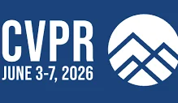
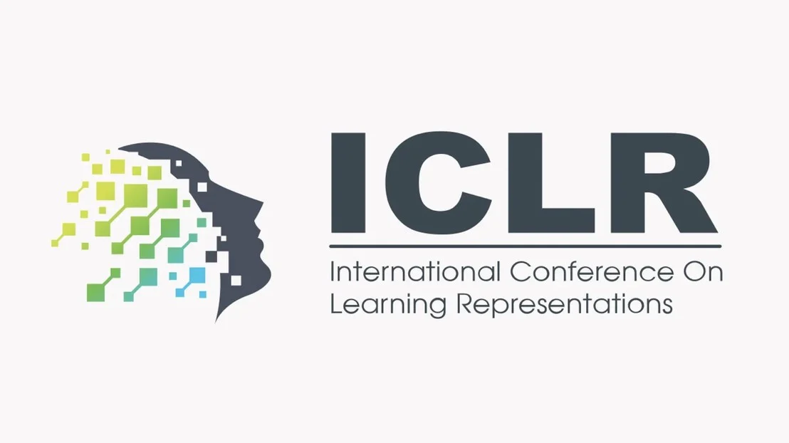
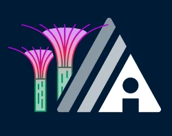
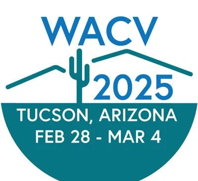

Funding recommendation
AI mentoring for student veterans
An NSF proposal led by Sooin Kim, with Thomas Pedroni and Dongxiao Zhu, was recommended for funding to support student veterans in engineering.
Source ↗From the lab
Research announcements, awards, and achievements from our community.
An NSF proposal led by Sooin Kim, with Thomas Pedroni and Dongxiao Zhu, was recommended for funding to support student veterans in engineering.
Source ↗Our project on safety-aware post-training for large reasoning models received support from the NSF-led National AI Research Resource pilot.
Source ↗Ujunwa Mgboh’s first-authored paper develops transformer-based fluence map prediction for radiotherapy planning.
Source ↗
Rafi Ibn Sultan’s first-authored paper combines vision, language, depth, and segmentation to support pedestrian navigation.
Source ↗
Saleh Zare Zade’s first-authored paper, “Attention Smoothing Is All You Need for Unlearning,” studies how models can forget targeted information.
Source ↗
Xiangyu Zhou’s first-authored paper, “Not All Tokens Are Meant to Be Forgotten,” was accepted for an oral presentation.
Source ↗
VisionWay advances AI for accessible path selection and navigation.
Source ↗The project develops foundations and applications for removing unwanted knowledge from large language models.
Source ↗First-authored work by Rafi Ibn Sultan and Saleh Zare Zade advances mobility infrastructure segmentation and membership inference research.
Source ↗Mohammad Amin Roshani’s first-authored study on LLM-powered COVID-19 risk assessment was accepted by JMIR AI.
Source ↗
Chengyin Li’s first-authored papers advance multimodal and multi-organ medical image segmentation.
Source ↗The lab participates in a $5 million HRSA Geriatrics Workforce Enhancement Program project.
Source ↗Chengyin Li’s first-authored paper develops a focal transformer for boundary-aware prostate segmentation in CT images.
Source ↗Yao Qiang received the Michael E. Conrad Award, and Chengyin Li received the department’s Best Graduate Research Assistant recognition.
Source ↗A Convergence Accelerator grant supports human-centered AI to improve mobility access for people with disabilities.
Source ↗An R33 grant supports a chatbot that brings together social, clinical, and molecular information for risk assessment.
Source ↗